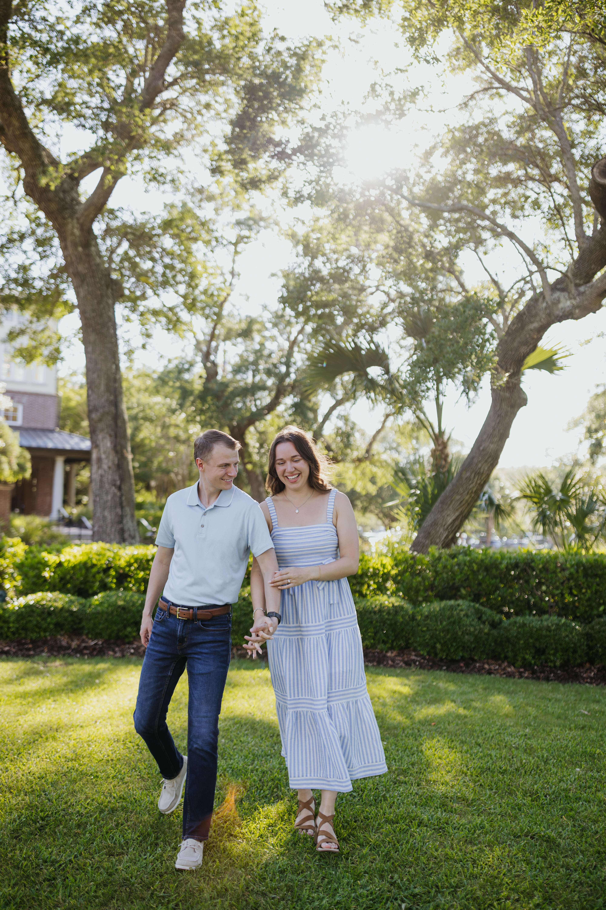

Clay and Liz began their relationship while attending Crestwood High School where they met running on the cross country team. They have been running after each other's love ever since! Later, Liz introduced Clay to the joys of college football. They faithfully cheer for the Nittany Lions and frequently attend football games with family and friends.
Upon graduating college, the couple relocated to Georgia in pursuit of their respective careers. Liz and Clay are parishioners of St. Peter Chanel Catholic Church in Roswell, Georgia. In their free time, the couple enjoys spending time with their 3-year-old Boykin Spaniel, Woodstock, trying new recipes, and camping in north Georgia's wilderness.
Clay and Liz engaged on May 22, 2025 on Kiawah Island, South Carolina. They are both delighted to be returning home to celebrate their nuptials!
